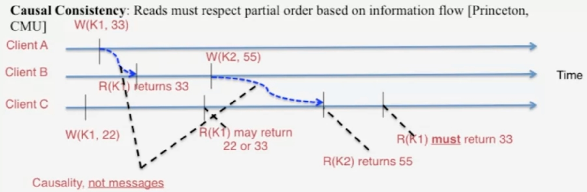
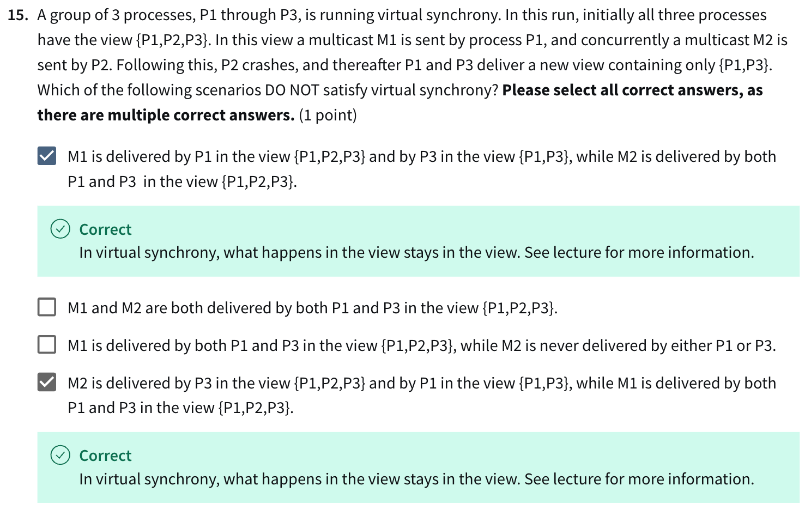

CS425 Distributed Systems¶
MapReduce¶
- reduce doesn't start until all map is done, generally speaking
- map -> shuffle -> reduce
- cannot concat map or reduce, only map - reduce - map - reduce - ...
- shuffling
- map jobs output -> shuffle them -> distribute to reduce jobs
- so if MapReduce is running across 20 machines, 1/20 of the data would not need to be transferred across networks but since it's local
- distributed file system
- e.g. GFS (Google File System), HDFS (Hadoop Distributed File System)
- map
- input: distributed file system
- output: local file system
- reduce
- input: local file system
- output: distributed file system
- output sorted for easy distribution & partitioning (range-based)
- YARN (Yet Another Resource Manager) scheduler
- global resource manager (RM)
- scheduling
- per-server node manager (NM)
- daemon
- per-application (job) application master (AM)
- global resource manager (RM)
Gossip¶
Multicast Protocols¶
- send info to multiple nodes
- fault tolerant
- available
- scalable
- application level
Centralized¶
- one node send info to multiple nodes directly
- with a loop
- not fault tolerant
- fails halfway through the loop -> a lot don't receive
- high latency \(O(N)\)
Tree-based¶
- fault tolerant
- if a node on the higher hierarchy fails, lots of the nodes won't receive
- use ACK or NAK to repair
- can add random delay & use exponential backoff to avoid too much ACK/NAK
- latency \(O(\log N)\) if balanced
- high overhead of \(O(N)\) ACK/NAK
Epidemic Multicast / Gossip Protocol¶
push gossip¶
- receive message -> push to a random set of nodes
- if received multiple messages, push a subset of them by random / recency / priority
- the spread
- \(n+1\) nodes
- \(x_t\) = uninfected notes at \(t\)
- \(y_t\) = infected notes at \(t\)
- \(x_t+y_t=n+1\)
- \(x_0=n\)
- \(y_0=1\) (root)
- \(\dfrac{dx}{dt}=-\beta xy\) = infection rate
- \(xy\) = the number of possible contacts between the uninfected & infected at a given time
- \(0\leq\beta\leq 1\), the fraction that actuall happens
- \(x=\dfrac{n(n+1)}{n+e^{\beta(n+1)t}}\)
- \(y=\dfrac{n+1}{1+ne^{-\beta(n+1)t}}\)
- the convergence
- \(\beta=\dfrac{b}{n}\), \(b\) is the fanout
- \(t=c\log(n)\)
- \(x\approx\dfrac{1}{n^{cb-2}}\)
- for \(b=c=2\), \(x=\dfrac{1}{n^2}\), which is close to 0
- meaning the gossip converges in \(O(\log n)\)
- each node transmits \(bc\log(n)\in O(\log n)\) messages
- failures
- packet loss
- 50% packet drop -> analyze with \(b/2\) -> 2x latency
- node failure
- 50% nodes fail -> analyze with \(n/2\) & \(b/2\) (because 50% sent to bad nodes)
- packet loss
- \(O(\log n)\) is practically almost constant
- ln(1K) = 10
- ln(1B) = 30
- pros
- spreads quickly -> low latency
- lightweight
- highly fault tolerant
pull gossip¶
- periodic pull from a random set of nodes
- the spread
- a tree with constant fanout / degree / num of children
- \(O(\log n)\) to spread to \(n/2\)
- \(p_t\) = the fraction / ratio of uninfected nodes at \(t\)
- fanout = \(k\) i.e. the number of nodes to pull each iteration
- for an uninfected node to stay uninfected at \(t+1\), the \(k\) nodes it pulls need to all be uninfected
- \(p_{t+1}=p_tp_t^k=p_t^{k+1}\) - super exponential
- from \(n/2\) to \(n\) takes \(O(\log\log n)\)
hybrid - push pull¶
- use push to infect half of the nodes in \(O(\log n)\)
- use pull to quickly converge in \(O(\log\log n)\)
topology-aware gossip¶
- if nodes are distributed across data centers / racks evenly, and if push/pull randomly, router load would be \(O(N)\)
- make the probability of picking outside the subnet \(1/n_i\)
- \(n_i\) = the num of nodes in the subnet
- router load \(O(1)\)
- still \(O(\log n)\) spread time
Implementations¶
- AWS EC2 & S3
- Cassandra
Membership¶
- suppose machine fails once every 10 years
- 120 servers -> MTTF (mean time to failure) = 10y x 12m / 120 = 1 month
- 12k servers -> MTTF = 7.2hr
- use membership protocol to auto detect failures
Group Membership Protocol¶
- maintain a membership list of working nodes
- dealing with join/fail/leave
- different implementations of the list
- complete list
- strongly consistent
- almost-complete list
- weakly consistent
- e.g. using #Gossip
- partial-random list
- complete list
- components
- failure detector
- dissemination
- spread info about join/fail/leave
Failure Detector¶
- crash frequency is \(O(N)\)
- properties
- completeness vs. accuracy
- completeness
- no miss
- accuracy
- no false alarm
- not possible to achieve both in a lossy network (consensus problem)
- irl we guarantee completeness, while having partial or probabilistic accuracy because a miss is more costly
- completeness
- speed
- time to first detection of failure
- scale
- distribute load evenly on each member
- completeness vs. accuracy
- centralized heartbeating
- all nodes send heartbeats to a node
- if not receiving from a node withing timeout, mark it as failed
- cons
- single point of failure
- central node may be overloaded (hotspot)
- ring heartbeating
- circular doubly linked list
- pros
- no single point of failure
- no hotspot
- cons
- if a node's prev & next nodes both failed, its failure can't be detected
- overhead for ring repairing
- all-to-all heartbeating
- broadcast heartbeat to all other nodes
- pros
- equal load for each node
- no miss (unless all other nodes have also failed)
- cons
- high load on each node
- if a node is having longer delay at receiving packets, it may mark all other nodes as failed -> low accuracy
- gossip-style heartbeating
- nodes periodic gossip their memebership list
(member ID, heartbeart counter, timestamp)
- update local memebership list with the info received
- if a heartbeart hasn't been increased within the timeout, mark the member as failed
- to prevent gossipping dead info, remember the deleted member for another timeout, and ignore any info about it if received
- e.g. node 3 died -> node 1 delete node 3 because it's reached timeout -> node 2 sends node 1 its list which contains node 3 within timeout -> add node 3 back with current time -> node 3 never gets deleted
- spread
- a single heartbeat takes \(O(\log N)\) to propagate
- \(N\) single heartbeat takes
- \(O(\log N)\) to propagate if bandwidth is \(O(N)\)
- \(O(N\log N)\) to propagate if bandwidth is \(O(1)\)
- gossip frequency tradeoff - bandwidth vs. detection time
- timeout tradeoff - detection time vs. false alarm rate / accuracy
- nodes periodic gossip their memebership list
- all-to-all & gossip-style heartbeating
- mixing failure detection & dissemination
- sub-optimal
- SWIM
- use ping instead of heartbeat
- every period, ping a random node \(j\)
- if not receiving ACK, ping again but with an indirect path
- make random \(K\) other nodes forward the ping to node \(j\) and its ACK
- if received \(0\) ACK, mark node \(j\) as failed
- if not receiving ACK, ping again but with an indirect path
- constant detection time & load
- tune false alarm rate with \(K\)
- misc
- decrease hearteating frequency -> increase false alarm rate if timeout stays the same
- in Alice's protocol, each node pings 3 other nodes, while in Bob's protocol, there may be leaves (no outgoing edge) that can't be detected
Dissemination¶
- multicast
- hardware or IP
- unreliable
- point-to-point
- send to all other nodes
- expensive
- piggyback - gossip / infection style
- use it with SWIM
- carry info with the ping & ACK if SWIM, and update membership list
- no extra messages needed
- \(O(\log N)\) time dissemination
- after \(\lambda\log N\) periods, \(\dfrac{1}{N^{2\lambda-2}}\) nodes left unineffected
- may have high false alarm rate
- packet losses
- e.g. from congestion
- if there's a high message loss rate around a node, indirect pinging to this node won't prevent it from being wrongfully marked as failed
- solution: add a suspect state between alive & dead
- packet losses
- suspicion
- use incarnation number
- when a node receives messages about it being sus, increment incarnation number and disseminate messages about it being alive
- failed overrides everyone
- marked as failed forever once marked as failed by a node
- if not failed, higher incarnation overrides lower ones
- if the same, suspect overrides alive
Grid¶
- using geographically distributed computing resources
- use APIs to communicate with the protocols of each site
- e.g. Globus
- security challenges: it's federated so there may be different protocols & mechanisms for each site
- single sign-on
- s.t. user don't have to log in to each site
- mapping to local security mechanisms
- credentials inheritance
- children should have access to the resources of its parent
- single sign-on
P2P Systems¶
Napster¶
- server maintain
(filename, ip address, port)tuples - servers don't store files but pointers for all file
- search
- flow
- client send search query to server
- server returns the list of host tuples relevant to the query
- client pings each host to find transfer rates
- client requests file from the best host
- flow
- use TCP
- cons
- no security: plain text messages & passwords
- indirect infringement of copyright
- centralized server
- may have congestion
- single point of failure
Gnutella¶
- no servers, clients (servents) do all the work
- clients / servants / peers form a graph (overlay graph)
- message types
- Query: search
- QueryHit: query response
- Ping: ping a peer
- Pong: ping response
- Push: initiate file transfer
- header format
- use TTL to prevent query from circulating forever
- TTL = number of hops
- use HTTP
- search
- BFS query out (flood)
- use Descriptor ID to prevent duplicate visits
- when a node has it, return QueryHit back to the path
- BFS query out (flood)
- file transfer
- requestor choose the best info received from search
- request file with HTTP
- if blocked because of firewall, send Push message, responder then establish a TCP connection with the requester and sends a GIV HTTP message, requester then do
GETrequestGIV <file index>:<server id>/<file name>- if requester is also behind the firewall, then not possible
- ping-pong
- ping has no payload
- to maintain active neighbor list
- problems
- 50% traffic from ping/pong
- sol
- multiplex
- receives multiple pings -> aggregate and send out one pong
- cache
- memoization pong (return value) of ping (key)
- reduce ping frequency
- multiplex
- sol
- repeated searches
- sol: cache Query & QueryHit
- some peers don't have enough bandwidth
- sol
- use central server as proxies for them
- FastTrack: leverage more powerful peers
- sol
- many freeloaders
- 70% in 2000
- only download, never upload
- not Gnetella-specific
- flooding causes excessive traffic
- sol: structured p2p system e.g. Chord
- 50% traffic from ping/pong
FastTrack¶
- hybrid of #Napster & #Gnutella
- some nodes become supernode, acting like #Napster servers
- based on reputation
BitTorrent¶
- split files into blocks
- seed: node with all blocks of a file
- leecher: node with some blocks of a file
- local rarest block first: download least replicated block first
- incentive sharing - tit for tat bandwidth usage
- provide blocks to neighbors providing best download rate in the past
- incentivize nodes to provide good download rates
- choking: limit number of concurrent uploads
Chord¶
- DHT (distributed hash table)
- operations: insert/lookup/delete keys
- challenges
- load balancing
- fault tolerance
- operation efficiency
- locality: transmit with shortest path of the underlying network topology
- #Napster, #Gnutella, and #FastTrack are unoptimized DHTs
- use consistent hashing to map peers to hash ring
(ip address, port)-> SHA-1 -> 160-bit binary string (often represented as 40-bit hex string) -> pick \(m\) bits and map to a number in \([0, 2^m-1]\) as peer ID- finger table
- for each peer, has pointer to the closest bigger entry to + \(2^0, 2^1, 2^2,\cdots\) (mod \(2^m\))
- map filename to peers using consistent hashing
- filename -> SHA-1 -> 160-bit binary string -> mod \(2^m\) -> find closest greater peer ID
- searching for a filename in \(O(\log N)\) (same for insertion)
- hash filename and mod to get a number \(k\)
- at each peer, send query to furthest finger table entry before \(k\) (clockwise), if the 1st entry (successor) is after \(k\), send to successor
- fault tolerance
- maintain \(r=2\ln N\) successor entries and use successor during failure
- if 50% failure, probability of at least 1 successor is alive for a node = \(1-0.5^{2\ln N}=1-\dfrac{1}{2^{\ln N^2}}=1-\dfrac{1}{N^2}\)
- if 50% failure, probability of at least 1 successor is alive for ALL ALIVE node = \((1-\dfrac{1}{N^2})^{\frac{N}{2}}=e^{-\frac{1}{2N}}\approx 1\) with big \(N\)
- because \(\ln (1-x)\approx -x\) if \(x<<1\)
- replicate key/file to \(r\) successors & predecessors
- maintain \(r=2\ln N\) successor entries and use successor during failure
- join/leave/fail
- update successors & finger tables
- fail -> affect all finger tables with the failed node inside
- join
- affects \(O(\log N)\) finger table entries
- \(O(\log N)\times O(\log N)\) messages
- stabilization protocol: each node periodically ask immediate neighbors for their finger table & successors
- fix loops occur during concurrent joins/leaves/failures
- \(O(N^2)\) stabilization rounds to reach strong stability
- update successors & finger tables
45's finger table:[46 (99), 47 (99), 49 (99), 53 (99), 61 (99), 77 (99), 109 (132), 173 (199)], so choose199199's finger table:[200 (234), 201 (234), 203 (234), 207 (234), 215 (234), 231 (234), 8 (32), 72 (99)], so choose234234's finger table:[235 (32), 236 (32), 238 (32), 242 (32), 250 (32), 11 (32), 43 (45), 107 (132), no entry is before12, so send to successor3212found in32
Pastry¶
- hash to a hash ring like #Chord
- routing with prefix matching \(O(\log N)\)
- maintain pointers to peer for each matched prefix
- for peer with id
010101:*0*01*010*0101*01010*
- when routing a message, send to the entry with the largest matching prefix
- tie breaker: shortest round-trip-time
- shorter early hops, longer late hops
- for peer with id
- use stabilization protocol
Kelips¶
- \(k \approx \sqrt{N}\) affinity groups
- each node is hashed to an affinity group
- a node points to all other nodes in the same group and one for each other group
- ~ \(2\sqrt{N}\) neighbors
- for contacts in other groups, use the ones with the shortest underlying path (round-trip-time)
- hash filename to affinity group -> all nodes inside store the filename and the file metadata (address)
- they don't store files but only info
- search for a filename \(O(1)\)
- hash filename to group -> ask its contact in that group for file info
- if the contact is down, route via a node in the same group
- hash filename to group -> ask its contact in that group for file info
- memory \(O(\log N)\), but still small
- 1.93MB for 100k nodes, 10M files
- use gossip to maintain membership lists
- \(O(\log N)\) dissemination time
- file metadata maintenance
- gossip-style heartbeating, timeout delete
- compared to #Chord & #Pastry
- shorter lookup time, more memory used, more background bandwidth used
NoSQL¶
- column-oriented store
- more efficient range query
- reduce scan on query on specific field
Cassandra¶
- distribute key-value store, designed to run in a datacenter (and across)
- from Facebook
- routing with a coordinator to servers on a hash ring in each data center
- no finger tables
key replication strategy¶
- simple strategy
- random partitioner: hash based assignment
- byte ordered partitioner: range based assignment
- network topology strategy: for multi data centers
- \(k\) replicas for each key per data center
- assign each replica to a different rack (search clockwise)
snitches¶
mapping IPs to racks & data centers
- simple snitch: rack-unaware
- rack inferring: deduct topology from ip address
- e.g.
101.102.103.104->x.<data center>.<rack>.<node>
- e.g.
- property file snitch: store the mapping in a config file
- EC2 snitch: if using EC2
- EC2 region -> data center
- availability zone -> rack
writes¶
- send write to coordinator
- coordinator can be per key / client / query
- per key coordinator will ensure serialized writes
- coordinator uses partitioner to send query to all responsible replicas
- ACK after receiving \(w\) confirmations
- uses sloppy quorum & hinted handoff, see System Design#Quorums
- elect data center coordinator with Apache Zookeeper
- variant of Paxos
steps
- log the write request in commit log
- save to memtable i.e. memory cache as a write-back cache
- when memtable is full or old, flush the data to disk
- an SSTable (sorted-string table) for data (key-value pairs)
- an SSTable for index (key-location pairs)
- \(O(\log N)\) lookup
- bloom filter for efficient search
bloom filter¶
- stored in off-heap memory
- check if a key exists in a probabilistic way
- may have false alarms / false positives, but never a miss
- a large bitmap
- initially all 0
- insert a key -> hash with \(k\) hash functions -> mark all \(k\) numbers as 1
- check a key's existence: if all hashed \(k\) numbers are 1, return True, if any is 0 then False
- false alarm scenario: the 1s are set by other keys
- low false alarm rate
- e.g. \(k=4\), 100 keys, 3200 bits, false alarm rate = 0.02%
reads¶
- coordinator sends read query to \(r\) replicas that respond the fastest in the past, and return the one with the latest timestamp
- do read repair if conflict
- a row may be split across multiple SSTables (like before the compaction algo cleans them up) -> a read may need to fetch from multiple SSTables -> read is slower than write
deletion¶
When deleting a key, it inserted a timestamp deletion marker called a tombstone rather than removing it.
If a node receives a delete command for data it stores locally, the node tombstones the specified object and tries to pass the tombstone to other nodes containing replicas of that object. But if one replica node is unresponsive at that time, it does not receive the tombstone immediately, so it still contains the pre-delete version of the object. If the tombstoned object has already been deleted from the rest of the cluster before that node recovers, Cassandra treats the object on the recovered node as new data, and propagates it to the rest of the cluster. This kind of deleted but persistent object is called a zombie.
compaction¶
- periodically merging SSTables i.e. merging updates for a key
- remove keys with a tombstone though the compaction algo
membership¶
- every server can be a coordinator, so every server needs to maintain a list of all other servers
- use #Gossip-style heartbeating
- use a suspicion mechanism to dynamically adjust the timeout
- different from the one in #Group Memebership Protocol
- failure detector outputs a PHI value indicating suspicion level
- looks at historical heartbeat inter-arrival times and determines timeout
- PHI = 5 -> 10-15s timeout
latency¶
- orders of magnitudes faster than RDBMS
- for 50GB data
consistency levels¶
a client can specify the consistency level for each read/write operation
- ANY: ACK from anyone (even the coordinator)
- fastest
- ALL: ACK from all replicas
- strong consistency
- slowest
- ONE: ACK from at least 1 replica
- quorum: \(k\) ACKs, see System Design#Quorums
- global quorum: quorum across data centers
- local quorum: quorum in the coordinator's data center
- each quorum: quorum in each data center
Consistency¶
- per-key sequential
- CRDTs (commutative replicated data types)
- order of operations don't matter
- e.g. in a counter, A do +1 -> B do +1 == B do +1 -> A do +1
- red-blue consistency
- blue: CRDTs
- red: sequential operations
- causal consistency
- 
- return one of the causal results
- strong consistency
- linearizability
- maintain a global order
- all operations across clients are ordered based on time
- sequential consistency
- maintain a global order
- operations in each client are ordered, but can be interleaved across clients
- linearizability
HBase¶
- origin
- Google's BigTable - 1st blob-based storage
- HBase - Yahoo's open source version of BigTable
- now part of Apache
- functions
- get/put row
- scan (range queries)
- multiput
- CAP: consistency over availability
- replicated across regions
- ColumnFamily = a set of columns
- each ColumnFamily in a region has a Store
- MemStore: memtable / memory cache, store updates, flush to disk when full
- StoreFile: on-disk storage, like SSTable
HFile¶
- magic: unique data id
HLog¶
- maintain strong consistency with HLog, a write-ahead log
- write to append only log -> write to MemStore
- log replay
- after failure recovery or reboot
- replay stale logs (check with timestamp)
- add edit to MemStore
- cross-datacenter replication
- leader-based
- leader cluster sends HLogs to follower clusters synchronously -> update respective MemStores
- use Zookeeper for coordination
Clock Synchronization¶
we want to order events across processes in a distributed system
- each process has a local clock
- clock difference
- clock skew
- offset
- clock drift
- clock speed difference
- causes clock skew
- clock skew
- clock sync period = \(\dfrac{M}{2\times\text{MDR}}\)
- \(M\) = max acceptable skew
- MDR = maximum drift rate of each clock compared to UTC
- max drift rate between 2 clocks 2 x MDR
- sync of a group of processes
- external sync
- make sure each local process clock is within bound with an external source
- \(|C_i-S|<D\)
- \(C_i\) = clock of process \(i\)
- \(S\) = external clock
- \(D\) = bound
- internal sync
- make sure the max skew between any 2 local process clock is within bound
- \(|C_i-C_j|<D \ \forall i,j\)
- external sync guarantees internal sync, but not vice versa
- external sync with bound \(D\) -> internal sync bound of \(2D\)
- external sync
Cristian's Algorithm¶
We want to the actual time based on external sync clock time with a bounded error
- we assume
- min1 = min latency from process P to external source S
- min2 = min latency from S to P
- we know
- RTT > min1 + min2
- t = clock time received from S
- actual time at P when receiving t =
[t + min2, t + (RTT - min1)] - set the time to halfway of the interval = \(t+\dfrac{RTT+min2-min1}{2}\)
- max error = \(\dfrac{RTT-min2-min1}{2}\)
- rules
- never decrease clock value, or may violate event ordering within the same process
- can increase or decrease the clock speed
- error is too high -> average multiple readings
NTP Network Time Protocol¶
- hierarchical, a tree
- non-leaf -> server
- leaf -> client
- each node sync with parent
- parent sends message 1 to child -> child sends message 2 to parent
- offset = difference between the 2 latency / 2
- \(o=\dfrac{(tr_1-ts_2)-(tr_2-ts_2)}{2}\)
- the error between calculated offset and the real offset is bounded by RTT
- real offset = \(o_r\) = child time - parent time
- \(L_1\) = latency of message 1
- \(L_2\) = latency of message 2
- \(tr_1=ts_1+L_1+o_r\)
- \(tr_2=ts_2+L_2-o_r\)
- \(o=\dfrac{(tr_1-ts_2)-(tr_2-ts_2)}{2}=\dfrac{L_1-L_2}{2}+o_r\)
- error = \(|o-o_r|=|\dfrac{L_1-L_2}{2}|<|\dfrac{L_1+L_2}{2}|=|\dfrac{\text{RTT}}{2}|\)
Lamport Timestamp¶
The goal is to maintain causality, the order of the events. The absolute timestamp doesn't necessarily matter.
- same process: a -> b if \(t_a<t_b\)
- message between 2 processes: send -> receive
- transitivity: a -> b & b -> c then a -> c
each process maintains a local counter treated as timestamp
- init = 0
- increment counter on each process instruction
- increment counter on sending a message (with counter attached)
- receive a message -> update counter with
max(local counter, message counter) + 1 - an event = process instruction / send / receive
Lamport timestamp can't order concurrent events i.e. events without a causal relationship
examples
vector timestamp version

Global Snapshot¶
Overview¶
We want to capture the global state, the state of each process & each communication channel.
purpose:
- recovery checkpoint
- garbage collection of unused objects (without pointers)
- deadlock detection
- termination of computations
approach: synchronize all clocks (sufficient condition: state 1 -> state 2 obeys causality) -> ask processes to record state at a specific time
- problems
- time sync error
- no channel states, the states of messages in the channels
Global Snapshot Algorithm¶
- requirements
- not interfering the normal processes
- each process records its own state
- process state
- heap, registers, program counter, code, etc. (coredump)
- global state collected distributedly
- any process can initiate the snapshot
- Chandy-Lamport Global Snapshot Algorithm
- init: \(P_i\) initiate the snapshot
- records its own state
- creates a marker message
- sends a marker message to all of its outgoing channels
- starts recording all the incoming messages from the incoming channels
- spread: when a process \(P_j\) receives a marker message from the incoming channel \(C_{ij}\)
- if first time receiving the marker message
- records its own state
- mark the state of the channel \(C_{ij}\) as "empty"
- sends a marker message to all of its outgoing channels
- starts recording all the incoming messages from the incoming channels (except \(C_{ij}\))
- if not the first time
- mark the state of the channel \(C_{ij}\) as all the messages since it starts recording i.e. first received the marker message
- if first time receiving the marker message
- termination: when all processes have received a marker on all of their incoming channels
- optional: a central server collects all the individual snapshots and assemble them into a global snapshot
- the snapshot would be causally correct
- init: \(P_i\) initiate the snapshot
Consistent Cuts¶
- cut = a line (snapshot) cutting off all processes on a certain time
- events before the cut -> in the cut
- after -> out of the cut
- consistent cut = cut that preserves causality
- for every event \(e_j\) in the cut, if \(e_i\rightarrow e_j\), then event \(e_i\) is also in the cut
- Candy-Lamport Global Snapshot Algorithm always creates a consistent cut
- pf: if event \(e_j\) in process \(P_j\) happens before \(P_j\) records its state (\(e_j\) is in the cut) and \(e_i\rightarrow e_j\), then \(e_i\) happens before \(P_i\) records its state s.t. both are in the cut
- suppose \(P_i\) snaps -> \(e_i\) -> \(e_j\) -> \(P_j\) snaps
- \(P_i\) snaps -> \(e_i\) -> \(e_j\) means that \(P_j\) will receive marker and snap before \(e_j\), meaning \(e_j\) won't be in the cut -> contradiction
- pf: if event \(e_j\) in process \(P_j\) happens before \(P_j\) records its state (\(e_j\) is in the cut) and \(e_i\rightarrow e_j\), then \(e_i\) happens before \(P_i\) records its state s.t. both are in the cut
Correctness¶
liveness¶
guarantee a certain good thing will happen eventually
e.g.
- distributed computation: will terminate
- #Failure Detector: completeness
- consensus: all processes will decide on a value
safety¶
guarantee that a certain bad thing will never happen
e.g.
- no deadlock in a distributed transaction system
- no orphan in a distributed object system
- #Failure Detector: accuracy
- consensus: no conflict
dilemma¶
it's difficult to satisfy both liveness & safety in a distributed system, in many cases it's the tradeoff between no miss & no false alarm
- #Failure Detector: completeness (liveness) vs. accuracy (safety)
- consensus: decision (liveness) vs . correct decisions (safety)
- legal system: jails all criminals (liveness) vs. jails no innocents (safety)
Global Properties¶
- for a state \(S\) to achieve #liveness about a property \(Pr\)
- \(S\) satisfies \(Pr\) || \(\exists\) \(S\rightarrow S'\) where \(S'\) satisfies \(Pr\)
- for a state \(S\) to achieve #safety about a property \(Pr\)
- \(S\) satisfies \(Pr\) && \(\forall\) \(S\rightarrow S'\) \(S'\) satisfies \(Pr\)
- stable = once true, stays true forever
- stable liveness
- e.g. computation has terminated
- stable non-safety
- e.g. there's a dead lock
- an object is orphaned
- stable liveness
- Candy-Lamport algo can detect stable global properties
Multicast¶
- definitions
- multicast: send to a group of processes
- broadcast: send to all processes
- unicast: send to a process
- usages
- #Cassandra & other db
- replication: multicast read/write to a replica group
- membership info (e.g. heartbeats)
- online scoreboards
- multicast to a group of interested clients
- stock exchange
- multicast trade info to other broker computers in the same set
- HFT
- air traffic control system
- multicast to other controllers
- all controllers need to receive same updates in the same order
- #Cassandra & other db
ordering types¶
- FIFO ordering
- from the same sender, order of messages received = order of messages sent
- doesn't care about messages from different senders
- causal ordering
- events received obeys the originally causal relationship
- systems with causal ordering
- social networks
- bulletin boards
- website comments
- causal \(\rightarrow\) FIFO
- assume process \(P\) sends message \(M\) and then \(M'\), to satisfy causal ordering, it needs to send \(M\) before \(M'\), which also satisfied FIFO ordering
- NOT vice versa
- total ordering / atomic broadcast
- doesn't care about send order
- all receivers all multicasts in the same order
- so like linearizability
- FIFO & causal looks at sending order, so we can combine them with total which looks at receiving order
FIFO Multicast¶
- each process maintains a vector timestamp (sequence number)
- \(P_{i}[j]\) = the latest sequence number from \(P_j\) that \(P_i\) has received
- sending
- \(P_j[j]\)++ -> \(P_j\) sends the multicast message with the new \(P_j[j]\)
- receiving
- \(P_i\) receives a message from \(P_j\) with the sequence number \(S\)
- if \(S=P_i[j]+1\)
- deliver the message to application
Total Ordering¶
- elect a leader / sequencer
- maintains a global sequence number \(S\)
- receives message \(M\) -> \(S\) ++ -> multicasts
<M, S>
- send message to group & sequencer
- \(P_i\) receives a message
<M, S(M)>from sequencer- \(P_i\) maintains a local sequence number \(S_i\)
- buffers the message until \(S_i+1=S(M)\), and then delivers the message to application, \(S_i\) ++
Causal Ordering¶
- vector timestamp
- similar to #FIFO Multicast
- \(P_j\) sends
- \(P_j[j]\) ++ -> \(P_j\) sends the message with the whole vector \(P_j[1...N]\)
- \(P_i\) receives message with vector timestamp \(M[1...N]\)
- buffers until both conditions below satisfied
- \(M[j]=P_i[j]+1\)
- \(P_i\) is expecting it from \(P_j\)
- \(\forall \ k\neq j\), \(M[k]\leq P_i[k]\)
- all events before \(M\) has already been received
- \(M[j]=P_i[j]+1\)
- after conditions met, deliver message to application and set \(P_i[j]=M[j]\)
- buffers until both conditions below satisfied
Reliable Multicast¶
- all non-faulty processes receive the same set of multicasts
- approach 1
- sender sends reliable unicast sequentially to all group members
- receiver forwards the message received to all group members
Virtual Synchrony¶
- views = membership lists
- each process maintains one
- view change: process join / leave / fail
- guarantees that all view changes are delivered in the same order to all non-faulty processes
- a multicast \(M\) is delivered in a view \(V\) when \(M\) is delivered after the process receives \(V\) but before it receives the next view
- guarantees that the set of multicasts delivered in a given view is the same for all non-faulty processes
- if a process didn't deliver \(M\) at \(V\) while others did, it will be removed
- what happens in a view, stays in the view
- independent to multicast orderings, so can be combined with any of them



Consensus¶
Consensus Problem¶
- goal: a group of processes reaching agreement on same values
- ordering of messages
- up/down status of processes
- leader
- mutually exclusive access to a resource
- constraints
- validity: everyone proposes a value -> decision
- integrity: decision is proposed by some process
- non-triviality: there are some initial system states that will lead to the consensus
- equivalent problems
- perfect #Failure Detector
- leader election
- harder problem
- agreement
sync & async models¶
- synchronous distributed system
- each message is received within bounded time
- drift of each local clock is bounded
- time for each step is bounded
- e.g.
- processors connected by a communication bus
- multicore machine
- Consensus is solvable in synchronous distributed system
- asynchronous distributed system
- unbounded
- e.g. Internet
- more general then synchronous distributed system
- Consensus is unsolvable in asynchronous distributed system
Solving Consensus for Synchronous Model¶
- assumptions
- synchronous system
- crash-stop
- fail by stopping
- operate in rounds
- we can do this since all is bounded
- allows at most \(f\leq N\) processes fail
- flow
- do \(f+1\) rounds
- initially, each process has its own value
- each round, each process multicasts all new values received to all
- for 1st round just sends its own value
- in the end, each process uses the min of all values received as decision
- proof by contradiction
- assuming \(p_2\) has a value \(v\) that \(p_1\) doesn't
- \(p_2\) must have received \(v\) in the final round, otherwise it would have sent \(v\) to \(p_1\)
- \(p_2\) must have received \(v\) from another process \(p_3\), which crashed before sending \(v\) to \(p_1\), in the final (f+1th) round
- \(p_3\) must have received \(v\) from another process \(p_4\), which crashed before sending \(v\) to \(p_2\), in the fth round
- ... -> there's at least 1 crash in each round -> \(f+1\) failures -> contradiction
Paxos Algo¶
- impossible to have consensus in async model, because failure is indistinguishable from having a huge delay
- but Paxos Algo provides safety & eventual liveness
- safety: consensus is not violated
- eventual liveness: if things go well, there's a good chance that consensus will be reached
- by Lamport
- rules
- has rounds, each round has a unique ballot id
- rounds are async, no time sync
- use timeouts
- if getting a message from round \(k+1\) in round \(k\), abort everything and move to round \(k+1\)
- 3 phases each round
- phase 1: elect a leader (election)
- phase 2: leader proposes a value (bill)
- phase 3: leader multicasts final value (law)
- flow
- phase 1 - election
- potential leaders multicast their ballot ids
- each OK to the one with the highest id
- a potential leader quits when seeing a higher id
- receives majority (quorum) of OK -> becomes the leader
- phase 2 - proposal
- leader proposes a value and sends to all
- if some processes have already decide in the previous round, use their value
- phase 3 - decision
- leader makes a decision and sends to all when hearing a majority of OKs
- phase 1 - election
- safety
- once deciding on a value, always the value
- durability
- process fails
- recover with logs
- leader fails
- timeout when process is trying to receive bill
- start another round
- message dropped
- can start another round if needed
- anyone can start a new round any time
- process fails
Leader Election¶
- for coordination between distributed servers, e.g.
- leader-follower replication
- sequencer in total ordering
- #NTP Network Time Protocol root server
- Zookeeper
- goal
- elect a leader among non-faulty processes
- all non-faulty processes agree on the leader
- detect leader failure and fix
- system model
- N processes
- messages are eventually delivered
- election protocol may have failures
- init
- any process can raise an election
- a process can raise 1 election at a time
- can have multiple elections at the same time
- only a single leader is elected
- election result not dependent on initiator
- properties
- safety: process must select the best one (e.g. highest id), or null
- liveness: no process select null
ring leader¶
- N processes in a ring
- clockwise messages
- can send message to successor
- algo
- process \(p_i\) finds out the old coordinator has failed
- \(p_i\) initiates with an election message containing id & attributes
- \(p_j\) receives the election message
- if the incoming attribute is greater, forward the message
- if the incoming attribute is smaller, and \(p_j\) hasn't forward an election message before, forward its own id & attributes
- if the incoming attribute is the same, it means that \(p_j\) is the best, and becomes the new coordinator -> sends an elected message
- receives the elected message -> forward it if not the elected leader itself
- analysis
- best case - initiator is the new leader
- 2N messages
- 2N time
- 1 election circle, 1 elected circle
- best case - initiator is the new leader
- handling concurrent elections
- drop the message when the received message's initiator is lower than history high
- so only the initiator with the highest id gets to have the election completed
- failures handling
- if the new leader crashed during the elected announcement stage, the elected message will circulate around forever
- sol 1: have the predecessor / successor of the new leader detect & recover the failure
- re-initiate election if
- received election message but timeout waiting for elected message
- received elected message but didn't hear from the new leader
- e.g. Zookeeper
- problem: failure of predecessor
- re-initiate election if
- sol 2: failure detector
- but failure detector can't be both complete & accurate
- incomplete -> failure may be missed -> violate safety
- inaccurate -> may wrongfully mark the leader as failed -> new election initiated forever, violating liveness
- election is a consensus problem
- consensus of the new leader's id's last bit
- so it's impossible to solve in async system
approaches¶
- approach 1
- each process proposes a value
- everyone reaches a consensus on one
- approach 2 Paxos-like
- e.g. Zookeeper & Google Chubby
- Google Chubby
- essential part of Google's infra
- need a master / leader
- election
- each server votes for at most 1 leader
- the server with the majority vote becomes the leader
- have cooldown time after an election
- master lease (leader validity) can be renewed as long as it can get the majority
- auto re-election when master doesn't renew the lease
- properties
- safety
- quorum / majority voting -> only 1 leader
- liveness
- eventually will select a leader
- irl, normally a few seconds, worst-case 30s
- safety
- Zookeeper
- centralized system for maintaining config info
- Paxos variant called ZAB (Zookeeper Atomic Broadcast)
- needs a leader
- each server chooses the next highest id
- election
- the one with the highest id becomes the leader
- two-phase commit
- leader candidates send
NEW_LEADERmessage to all - each process
ACKto the highest id - leader waits for
ACKmajority and sendsCOMMIT - receives
COMMIT-> update local leader var
- leader candidates send
- failure handling
- linked list sorted by id
- each node monitors the node with the next higher id
- leader fails -> its predecessor becomes the leader
- node fails -> its predecessor points to the node's successor
Bully Algorithm¶
- process \(p_i\) detects the leader / coordinator has crashed
- \(p_i\) is the next highest -> elects itself and sends out
coordinatormessage - \(p_i\) is not the next highest -> initiates election
- sends election message to those with higher id
- timeout no response -> elects itself and sends out
coordinatormessage - receives
OKbut timeout waiting forcoordinatormessage -> starts new election
- \(p_i\) is the next highest -> elects itself and sends out
- a process receives
electionmessage -> repliesOKand starts its own election - "bully" because the lower ids have to ask the higher ids and wait for their response before acting
- set timeout to worst case election completion time = message transmission time x5
electionfrom lowest id- reply from 2nd highest id
- election from 2nd highest id to highest id (failed leader)
- timeout
coordinatorfrom 2nd highest id
- worse-case: lowest id detects the failure
- \(i\)th highest process sends \(i-1\) election messages
- num of
electionmessages = \(O(N^2)\)
- best-case: 2nd highest detects the failure
- num of
coordinatormessages = \(N-2\) - completion time = 1 message transmission time
- num of
- guarantees liveness in synchronous model
- worse-case one way latency = worse case process time + message latency
- eventual liveness in async
Mutual Exclusion¶
- make sure at most one server has access to an object at any point of time
- mutually exclusive access on important stuff
- bank account
- without -> 2 clients doing deposits simultaneously to the same account
- both read $1000 -> add $10000 -> write $11000
- losing $10000
- without -> 2 clients doing deposits simultaneously to the same account
- files & dirs
- bank account
- flow
enter()AccessResource()exit()
- approaches
- single OS
- using semaphores, mutexes, condition vars, monitors, etc.
- distributed system
- using messages
- single OS
- in distributed systems
- system model
- reliable transfer
- messages are eventually delivered, FIFO
- processes do not fail
- properties
- safety: at most on process executes in critical section at any time
- liveness: every request is granted eventually
- ordering (good to have): FIFO
- system model
central solution¶
- elect a leader
- maintains a queue for critical section access
- give a special token allowing holder to access critical section
- leader actions
- receive a request from \(P_i\)
- has token -> give token to \(P_i\)
- no token -> add \(P_i\) to queue
- receive a token
- queue not empty -> dequeue queue head and give token to it
- queue empty -> retain token
- receive a request from \(P_i\)
- process actions
enter()exit()
- properties
- safety: True
- liveness: True
- \(N\) processes -> max \(N\) processes in queue
- if each process exits critical section eventually then liveness guaranteed
- FIFO ordering: True
- performance
- bandwidth: total numbers of messages sent in each
enterandexit- 2 messages for enter
- 1 message for exit
- client delay: delay of
enter&exit- not counting queueing delay
- 2 message latencies: request & grant
- synchronization delay: interval between one exiting and another entering
- 2 message latencies: release & grant
- bandwidth: total numbers of messages sent in each
- leader is performance bottleneck & single point of failure
ring-based¶
- no leader
- pass token around
- system model
- \(N\) processes in a virtual ring
- each process can send message to successor
- 1 token
- actions
enter()- wait until getting token
exit()
- if get token but not in
enter(), pass it forward
- properties
- safety
- 1 token
- liveness
- token eventually reaches the requesting process
- safety
- performance
- bandwidth
enter()- 1 message per requesting process
- \(N\) messages total, for transporting the token around
exit()- 1 message, to pass the token forward
- client delay: 0 ~ N message transmissions after
enter()- distance between the token and the entering process
- synchronization delay: 1 ~ N-1 message transmissions
- distance between the exiting process and the next entering process
- bandwidth
Ricart-Argawala's Algorithm¶
- system model
- reliable transfer
- messages are eventually delivered, FIFO
- processes do not fail
- no token
- lower waiting time than ring-based
- requests granted in order of causality
- algo
enter()atPi- set state to
Wanted - multicast to all processes
- request
<Ti, Pi> Ti= current Lamport timestamp atPiPiused for tiebreaking
- request
- wait until all other processes
Reply - set state to
Heldand enter critical section
- set state to
Pireceives<Tj, Pj>if state == Held || (state = Wanted && (Ti, i) < (Tj, j))- (already using or want to use and incoming is later)
- add request to local queue
elseReply
exit()atPi- set state to
ReleasedandReplyto all queued requests
- set state to
- properties
- safety: 2 processes can't both have access to critical section
- liveness: if a process enters CS, its request will eventually be granted
- ordering: causality
- by Lamport timestamp
- performance
- bandwidth
enter(): \(2(N-1)\) messagesexit(): \(N-1\) messages
- client delay \(O(1)\)
- synchronization delay \(O(1)\)
- bandwidth \(O(N)\)
- bandwidth
Maekawa's Algorithm¶
- get replies from only some processes instead of all
- voting set
- each process \(P_i\) has its own voting set \(V_i\) -> total \(N\) voting sets
- each process belongs to \(M\) voting sets
- intersection of any 2 voting sets is non-empty
- like quorum for strong consistency
- one approach
- arrange \(N\) processes in \(\sqrt{N}\times\sqrt{N}\)
- each row + col forms a voting set
- \(K=M=2\sqrt{N}-1\)
- each voting set size \(K\)
- \(K=M=\sqrt{N}\) works best
- total number of voting set members = \(KN\)
- each process in \(M\) voting sets -> \(KN=MN\) -> \(K=M\)
- for a process, total number of voting sets = members in its voting set and all their voting sets = \((M-1)K+1\)
- \(N=(M-1)K+1=(K-1)K+1\)
- \(K \approx \sqrt{N}\)
- each process \(P_i\) request permission from only its voting set \(V_i\) members
- each process gives permission to at most 1 process at a time
- algo
enter()atPi- set state to
Wanted - multicast
Requestto all processes inVi - wait for
Replyfrom all processes inVi - set state to
Held
- set state to
PireceivesRequestfromPjif state == Held || voted == True- queue request
else- send
ReplytoPjand setvotedto true
- send
PireceivesRelease- if queue empty
- set
votedto false
- set
- else
- dequeue and send
Replyto queue head - set
votedto true
- dequeue and send
- if queue empty
exitatPi- set state to
Released - multicase
Releaseto all processes inVi
- set state to
- properties
- safety: when
Pireceives allReplyfrom all members inVi, no other processPjcould have receivedReplyfrom all members inVjVi&Vjintersect at least 1 processPkPkcan only send 1Replyat a time
- liveness: NO
- can have deadlock

- P1 waits P3 waits P4 waits P2 waits P1
- can have deadlock
- safety: when
- performance
- bandwidth
enter(): \(2\sqrt{N}\) messagesexit(): \(\sqrt{N}\) messages
- client delay
- 1 round trip time
- synchronization delay: 2 messages
- bandwidth
Handling failures with Chubby¶
- Google Chubby
- advisory locks only
- uses Paxos
- all servers replicate same info
- have a leader
- clients send read requests to leader
- clients send write request to leader
- leader sends to all servers, gets majority (quorum), and responds
- leader failure -> election
- replica failure -> replace and recover
RPC¶
- LPC (local procedure call): regular function call
- calling a function in another process
- access objects via global references
- e.g. object address + ip + port + object number
- function may not be executed if
- request / reply is dropped
- called process failed before / after executing the called function
- hard for caller to determine the cause
- function may be executed multiple times if
- request is duplicated
- variants
- at most once
- e.g. Java RMI
- plays well with idempotent operations
- at least once
- e.g. Sun RPC
- best-effort
- e.g. COBRA
- at most once
- implementations
- client
- client stub
- same function interface as
callee()
- same function interface as
- communication module
- forwards requests
- replies
- client stub
- server
- dispatcher
- selects which server stub to forward request to
- server stub
- calls
callee()
- calls
- dispatcher
- client
- generating code
- human only writes
caller()&calleeO() - the rest is generated from interfaces
- human only writes
- marshalling
- different architectures use different ways to represent data
- big endian & little endian
- middleware uses platform-independent CDR (common data representation)
- marshalling: caller converts arguments to CDR format
- unmarshalling: callee converts arguments to its own format
- different architectures use different ways to represent data
Transaction¶
- ACID
- atomicity
- all or none
- consistency
- a transaction starts in a consistent state -> ends in a consistent state
- isolation
- a transaction is indivisible (atomic)
- no access to intermediate results
- durability
- after a transaction is completed, all is saved in permanent storage
- atomicity
- problems
- client & server may crash
- clients may run transactions concurrently
- we want to maximize transactions per second
- a transaction may run distributedly across different servers
- lost update problem
- 2 client doing transactions concurrently on the same value, they read the same value but modifies it differently and write, leading to an update being lost
- inconsistent retrieval problem
- when a transaction reads the intermediate value from another transaction
concurrent transactions¶
- goal: increase concurrency while maintaining correctness (ACID)
serial equivalence¶
- an interleaving of transaction operations is serially equivalence iff there's some consecutive ordering that gives the same end result
- 2 operations is conflicting if the combined effect depends on the execution order
- write has effect on server
- read has effect on client
- e.g.
- read x -> write x
- write x -> read x
- write x -> write x
- 2 reads on x or read/write on different key is fine
- 2 transactions are serially equivalent iff all pairs of conflicting operations (one from transaction A another from B) are executed in the same order for all objects both access
- e.g. we have operation Ax from transaction A, operation Bx from transaction B, Ax & Bx are conflicting, if A1 before B1, then Ax before Bx for all x
- solves lost update problem & inconsistent retrieval problem
- before committing a transaction, check for serial equivalence with all other transactions
- not -> abort and roll back
e.g.
read(b, T2); write(b, bar, T2); write(a, foo, T1); read(b, T1); write(a, baz, T2); read(a, T1)-> not serially equivalentwrite(a, foo, T1); read(b, T1); read(b, T2); write(b, bar, T2); read(a, T1); write(a, baz, T2-> serially equivalent
concurrency control¶
pessimistic¶
prevent transactions from accessing same object
- exclusive locking
- each object has a lock
- at most 1 transaction inside lock
- call
lock()before read/write unlock()when done- cons: reduces concurrency
- sol: read-read is never conflicting so should allow it
- read-write locks
- read mode & write mode
- read mode: allows multiple transactions
- write mode: exclusive lock
- reading only allowed if all transactions inside the lock is read mode
- writing only allowed when no transaction is in the lock
- if already reading and want to write, try promoting lock
- succeeds if no other transactions
- 2-phase locking -> serial equivalence
- growing phase -> shrinking phase in a transaction
- growing phase: acquires / promotes lock
- shrinking phase: release lock
- release only at commit
- guarantees serial equivalence cuz one's growing phase must overlap or be after another's shrinking phase
- problem of locks - deadlock
- 2 processes waiting each other to release a lock
- conditions of deadlock (needs all)
- some objects in exclusive lock
- transactions holding locks can't be preempted
- cycle in wait-for graph
- deadlock solution
- lock timeout: abort transaction if timeout trying to acquire lock
- cons: expensive & wasted work
- deadlock detection
- maintain wait-for graph with global snapshot
- find cycle periodically
- have cycle -> have deadlock -> abort certain transactions to break cycle
- cons: allows deadlock to happen
- deadlock prevention: destroy one of the deadlock necessary conditions
- ~~some objects in exclusive lock~~ all read-only
- ~~transactions holding locks can't be preempted~~ allow preemption of some transactions
- ~~cycle in wait-for graph~~ no edges in the wait-for cycle
- try locking all objects in the start of the transaction, abort if any fails -> a transaction either has access to all objects or none -> all transactions wait for no one
- lock timeout: abort transaction if timeout trying to acquire lock
optimistic¶
allows transactions to write first, check later
- more concurrency than pessimistic -> higher transactions per second -> less latency
- used when conflicts are rare
- first-cut approach
- read/write as will
- check for serial equivalence at commit time
- rollback if abort
- also abort transactions reading dirty data
- cons: cascading aborts
- timestamp ordering
- transaction id determines its position in serialization order
- a transaction can write to object O only if all transactions that have read/write O have lower ids
- a transaction can read object O only if the last transaction writing O has a lower id
- maintain read/write timestamp
- multi-version concurrency control
- maintain per-transaction version, tentative version, with timestamp
- read/write to correct tentative version
- read from immediately previous transaction
- eventual consistency in Cassandra & DynamoDB
- only one version for each key-value pair
- last-write wins
- use unsynchronized timestamps
- so slightly older write may win
- use unsynchronized timestamps
- eventual consistency in Riak
- use vector clocks to determine causal ordering
- conflicting / sibling value need to be resolved by user or application logic
- size-based pruning to prevent vector clock from growing too big
- time-based pruning to remove very old entries
in distributed systems¶
- need to ensure all servers involved commit their updates
- one-phase commit
- coordinator asks each server commit or abort
- problems
- server has no say
- if object is corrupted it can't commit
- server may crash before receiving order to commit, leading to data loss
- two-phase commit
- coordinator
- send prepare message to all ->
- if received any "no" or timeout, tell everyone to abort
- if all yes, send commit message to all
- send prepare message to all ->
- server
- receive prepare message -> save updates to disk -> reply yes/no
- receive commit message -> commit updates from disk to data store -> reply ACK
- failure handling
- coordinator
- logs all decisions & received/sent messages on disk
- crash -> recover from them
- logs all decisions & received/sent messages on disk
- commit/abort message lost
- server can poll coordinator
- coordinator
- Paxos
- can use paxos to decide commit or not and ordering updates
- coordinator
Replication¶
- pros of replication
- fault tolerance
- load balancing
- higher availability
- if a server is down \(f\) of the time, probability of at least 1 replica is on with \(k\) replicas = \(1-f^k\)
- challenges
- transparency
- client should be treated as if there's only a copy
- consistency
- all clients see consistent copy of data
- ACID transactions
- transparency
transparency¶
- request forwarding approaches
- passive replication
- have primary replica
- System Design#Leader-Based Replication
- active replication
- all replicas equal
- System Design#Leaderless Replication
- multicast to all other replicas
- can use any ordering
- failure handling
- both uses replicated state machine
- passive replication
consistency¶
- one-copy-serializability
- a concurrent execution of transactions in a replicated db is one-copy-serializable if = a serial of these transactions over a single copy
- correctness
- serial equivalence in single copy
- serial equivalence + one-copy-serializability in replicated system
Stream Processing in Storm¶
- background
- real-time view of large data
- social network trends e.g. Twitter real-time search
- website analytics e.g. GA
- intrusion detection system e.g. in datacenters
- requirements
- latency of few seconds
- high throughput
- real-time view of large data
- used by many companies
- e.g. Twitter for personalization & search
- components
- tuple = ordered list of elements
- e.g.
<tweeter, tweet><url, clicker ip, date, time>
- e.g.
- stream = sequence of tuples
- spout = source of streams
- e.g. crawler or DB
- bolt: operations with streams as input & output
- bolts -> nodes, streams -> edges
- operations
- filter
- join
- apply/transform
- etc.
- has multiple processes / tasks
- each incoming tuple goes to a task (grouping)
- grouping
- shuffle grouping
- even
- round-robin
- fields grouping
- by a subset of fields
- e.g. ranged based
- all grouping
- all tuples go to all tasks
- good for join
- shuffle grouping
- topology: directed graph of spouts (roots) & bolts (nodes)
- correspond to a Storm app
- can have cycle
- cluster
- master node
- runs Nimbus
- worker node
- runs Supervisor
- Zookeeper
- coordinates Nimbus & Supervisor
- keeps states of Nimbus & Supervisor
- master node
- tuple = ordered list of elements
- fault tolerance
- anchoring
- APIs
- emit
- ack
- a tuple is processed
- fail
- fail the sprout tuple at the root (?)
Distributed Graph Processing¶
- store large graph distributedly
- typical graph processing
- iterative
- each node has a value
- in each iteration, each node
- gets values from neighbors -> do some computation -> updates its value and spreads
- run with Hadoop / MapReduce
- one Map -> Reduce stage for each iteration
- use node id as keys for reduce
- at the end of each stage all the node values need to be written to HDFS -> slow
- run with bulk synchronous parallel model
- assign each node to a server
- hash-based
- locality based
- node & its neighbors go to the same server
- reduces inter-server communications
- each server has a set of nodes
- in each iteration, each server
- Gather
- gets values from neighbors
- Apply
- calculate new value
- Scatter
- send new value to neighbors
- Gather
- assign each node to a server
- run with Pregel System
- master & workers
- persistent data stored in distributed storage
- temp data stored on local disk
- flow
- master assigns a partition of nodes (input) to each worker -> workers mark the assigned nodes as active
- master tells workers to do iteration -> starts new one when all finished
- terminate when no active nodes && no messages in transit -> master tells workers to save its portion of the graph
- fault tolerance
- checkpointing
- master tells workers to save partition state to persistent storage periodically
- failure detection
- master pings workers periodically
- recovery
- checkpointing
Networks¶
- properties
- clustering coefficient
- probability of A & C are connected given that A & B are connected && B & C are connected
- i.e. probability of 2 neighbors of a node are connected
- tree -> 0
- complete graph (every node connects every other node) -> 1
- probability of A & C are connected given that A & B are connected && B & C are connected
- path length
- average shortest path length between each pair of nodes
- clustering coefficient
- different graphs
- extended ring graph: ring with each node connecting k predecessors & k successors
- high clustering coeff, long path length
- random graph
- low clustering coeff, short path length
- small world networks: all naturally evolved networks
- high clustering coeff, short path length
- extended ring graph: ring with each node connecting k predecessors & k successors
Degrees¶
- degree = num of neighbors of a node
- degree distribution
- regular graph: all nodes same degree
- Gaussian
- random graph: probability of having \(k\) edges is \(e^{-kc}\)
- power law / Pareto Distribution: P(degree > k) \(=k^{-\alpha}\)
- scale-free
- most nodes have a small degree, a few have a high degree
- lots of small world networks are this
- but some are not
- e.g. co-author networks
- some power law networks are not small world
- e.g. disconnected power law network
- but some are not
- WWW is this with \(\alpha=2.1 - 2.4\)
- heavy-tailed
Small World Power Law Networks¶
- removing a few high-degree nodes can disconnect the graph
- e.g. vital vitamins & electric grid
- when building shortest path between every pair of nodes, most will pass through the few high-degree nodes
- -> those high-degree nodes will be overloaded -> congestion or crash -> disconnect the graph -> outage
- sol: introduce some random hops
Single Processor Scheduling¶
see Operating Systems#scheduling algorithms
- FIFO / FCFS (first come first serve)
- SJC shortest job first
- optimal in terms of average completion time
- a case of priority scheduling (with time as priority)
- challenge: don't know the runtime of a task
- sol: estimation
- by input size
- by average runtime of other tasks in the same job
- sol: estimation
- round-robin
- preemptive
- cut each task into small portions, serve them in round robin
- good for
- interactive app
- need quick response
- FIFO & SJC are better for batch app
Distributed Scheduling¶
Hadoop Scheduling¶
- Hadoop Capacity Scheduler HCS
- multiple queues
- each queue
- has multiple jobs
- FIFO for jobs in the queue
- capacity allocation
- guarantees each queue a certain capacity
- can set hard upper limit on each queue
- allows queues to use idle resources
- no preemption
- when reducing a queue's usage, wait for its task to finish
- support nested queues
- Hadoop Fair Scheduler HFS
- goal: all jobs have same share of resources
- e.g. equal containers
- divide cluster into pools, evenly
- typically one pool per user
- can use whatever scheduling within a pool
- pool resource
- can set min share of resources
- min not met -> get resources from other pools, preemptive
- kill the most recently started task first
- can set limit on
- num of concurrent jobs per user
- num of concurrent jobs per pool
- num of concurrent tasks per pool
- goal: all jobs have same share of resources
Dominant Resource Fairness (DRF)¶
- fairness across jobs with multi-resource
- fair for multi-tenant system
- truthful: tenant has no interest in lying
- envy-fee (stable): tenant can't envy other's allocations
- scenario
- scheduling VMs in a cluster
- scheduling Hadoop in a cluster
- algo
- dominant resource of a job = the resource where resource needed / total cluster resource is the highest for all resources of the job
- e.g. a job needs 1 CPU / 10 CPU & 16 GB / 32GB RAM -> dominant resource is RAM
- ensure that the dominant resource percentage is the same for all jobs
- dominant resource of a job = the resource where resource needed / total cluster resource is the highest for all resources of the job
Distributed Machine Learning¶
- ML basics
- SGD Stochastic Gradient Descent
- AdaGrad: adaptive gradient
- Adam: adaptive moment
- RMSProp
- neural network
- ANN: Artificial Neural Network
- FFNN: feed forward neural net
- DNN: Deep NN
- hidden layers
- CNN: Convolutional NN
- DNN + convolution layers
- RNN: Recurrent NN
- GNN: graph NN
- training
- forward pass: calculating error
- backward pass: adjust weights
- tensor: data between operators
- inference
- prediction
- only forward pass
- hyperparameter: config parameters
- e.g. batch size
- not model weight
- ANN: Artificial Neural Network
- SGD Stochastic Gradient Descent
- data parallelism
- many workers on same model, send different data to each worker
- can use async training
- approaches
- central parameter server
- maintain weights
- aggregate weight updates from each worker
- all-reduce
- each worker multicasts weights to all other workers
- central parameter server
- model parallelism
- a model split across devices
- one input
Distributed File System¶
- file system
- abstraction of disk and memory blocks
- file
- header & blocks
- timestamps
- file type
- ownership
- access control list
- reference count = number of dirs containing this file
- 0 -> delete
- directory
- special case of files
- contain pointers to files
- security
- authentication
- authorization
- access control list
- per file, allowed users & type of accesses
- capability list\
- per user, allowed files & type of accesses
- access control list
vanilla DFS¶
- flat file service
- at server
read(file_id, buffer, position, num_bytes)- read
num_bytesfromposition - no automatic read-write pointer
- -> idempotent
- no file descriptors
- -> stateless
- unix is neither idempotent or stateless
- read
write(file_id, buffer, position, num_bytes)create(file_id)delete(file_id)get_attributes(file_id, buffer)set_attributes(file_id, buffer)
- directory service
- at server
- talks to flat file service
file_id = lookup(dir, file_name)add_name(dir, file_name)un_name(dir, file_name)list = get_names(dir, pattern)- like
ls | grep pattern
- like
- client service
- at client
- talk to flat file service & directory service
NFS Network File System¶
- client
- like client service in vanilla
- integrated with kernel
- do RPCs to server
- server
- like flat file service + directory service in vanilla
- mounting files & dirs
- virtual file system module
- access files via file descriptors
- local & remote files are indistinguishable
- a data structure for each mounted file system
- a data structure v-note for all open files
- local: v-note points to local disk i-node
- remote: v-note contains address to remote NFS server
- server optimizations
- server caching
- caches recently accessed blocks
- -> fast reads
- locality
- write approaches
- delayed write
- write in memory -> flush to disk every 30s
- fast but not consistent
- write-through
- write to disk immediately
- consistent but slow
- delayed write
- server caching
- client caching
- caches recently accessed blocks
- each block in cache tagged with
- Tc = last validated time
- Tm = last modified time at the server
- t = freshness interval
- consistency vs. efficiency tradeoff
- Sun Solaris: 3-30s for files, 30-60s for dirs
- cache entry at time T is valid if \(T - Tc < t\) || \(Tm_{client}=Tm_{server}\)
- the first check
$T - Tc < t$is for server load / bandwidth usage / latency vs. correctness tradeoff
- the first check
- when block is written, do a delayed-write to server
AFS Andrew File System¶
- design principles
- whole file servings
- rather than blocks
- whole file caching
- permanent cache on disk, not flushed after reboot
- whole file servings
- based on assumptions
- most file accesses are by a single user
- most files are small
- read >> write, and typically sequential
- design
- client = venus
- server = vice
- optimistic reads & writes
- done on local copy at client
- changes propagated to server when file closed
- client opens a file -> server sends over the entire file and gives a callback promise
- callback
- state = validated / cancelled
DSM Distributed Shared Memory¶
- processes virtually sharing memory pages
- owner = process with the latest version of a page
- each page in R/W state
- R state -> all processes can have copy
- W state -> only owner has copy
- read scenarios
- process 1 wants to read but has no copy while others have R copy -> ask for copy with multicast -> get page, mark as R, and save to cache -> read
- process 1 wants to read but has no copy while the owner has W copy -> locate owner with multicast and ask it to degrade from W to R -> get page, mark as R, and save to cache -> read
- write scenarios
- process 1 wants to write while it's the owner and it & others have the page in R state -> ask others to invalidate their copy with multicast -> mark page as W -> write
- process 1 wants to write while it's NOT the owner and it & others have the page in R state -> ask others to invalidate their copy with multicast -> mark page as W -> become owner -> write
- process 1 wants to write while it doesn't have a copy and others have the page in R/W state -> ask others to invalidate their copy with multicast -> fetch all copies -> use the latest copy -> mark page as W -> become owner -> write
- problems of invalidation: if 2 processes writing the same page concurrently
- invalidating each other
- lots of network transfer
- false sharing: when unrelated variables are on the same page
- page size too big -> many false sharing
- page size too small -> too many page transfers -> inefficient
- we want the page size to capture the locality of interest
- update approach
- can have multiple processes in W state
- write -> multicast newly written value to all holders of the page
- update > invalidate when:
- lots of sharing among processes
- writing to small vars
- big pages
- but generally invalidate > update
- consistency levels
- linearizability
- sequential
- causal
- pipelines RAM (FIFO)
- eventual
sensors¶
- RF radio frequency
- broadcast
- routing: store and forward
- bidirectional links
- consumes high power
- optical transmission
- simple hardware, consumes less powe
- directional antennas
- wormhole routing: can use mirrors to reflect, so no storing
- costly to broadcast
- costly to switch links
- TinyOS
- small - 3.4KB
- dataflow-driven
- multiple data streams, high concurrency
- real-time computations
- power conservation
- active / idle / sleep
- event-driven
- modular
- support a variety of power supplies
- in-network aggregation
- transmit more costly than compute
- radio transmit 12ma
- CPU active 4.6ma
- build trees among sensor nodes, with base station as root
- children sends data to parent, root get summary value
- transmit more costly than compute
- handling hostile environments
- high failure rates for sensor nodes
- required sensor networks qualities
- self-organizing
- self-managing
- self-healing
- scalable
- other directions
- ASICS application-specific integrated chips
- FPGA field programmable gate arrays
Security¶
- threats
- leakage: unauthorized access
- tampering: unauthorized modification
- vandalism: interference of service
- e.g. denial of service
- common attacks
- eavesdropping
- masquerading: impersonate
- e.g. identify theft
- message tampering: modifies message
- replay attack: replays old message
- e.g. to impersonate
- denial of service: bombard a port
- CIA properties
- confidentiality: no leakage
- integrity: no tampering
- availability: no vandalism
- policy & mechanism
- policy: the goals of a system
- mechanism: how are the goals accomplished
- mechanisms
- authentication: about user
- authorization: about access to an operation on an object
- auditing: logging
- design secure systems
- specify attacker model
- design & prove mechanisms to satisfy policy under the attacker model
- monitor